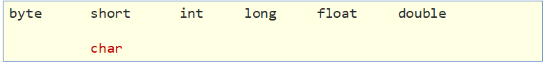
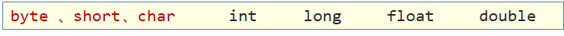

本文最后更新于：2022年8月29日 上午
本文是黑马程序员的Java入门基础视频教程的配套官方笔记，仅供学习使用
Java基础语法
0、类型转换问题
类型转换（理解）
在Java中，会存在不同类型的数据需要一起参与运算，所以这些数据类型之间是需要相互转换的，分为两种情况：自动类型转换和强制类型转换。
自动类型转换
- 类型范围小的变量，可以直接赋值给类型范围大**的变量。

把一个表示数据范围小的数值或者变量赋值给另一个表示数据范围大的变量。这种转换方式是自动的，直接书写即可。例如：
| double num = 10;
System.out.println(num);
byte a = 12 ;
int b = a;
System.out.println(b);
|
表达式的自动类型转换
在表达式中，小范围类型的变量会自动转换成当前较大范围的类型再运算。

注意事项：
表达式的最终结果类型由表达式中的最高类型决定。
在表达式中，byte、short、char 是直接转换成int类型参与运算的。
强制类型转换
类型范围大的数据或者变量，不能直接赋值给类型范围小的变量，会报错，把一个表示数据范围大的数值或者变量赋值给另一个表示数据范围小的变量必须进行强制类型转换。
强制类型转换格式：目标数据类型 变量名 = (目标数据类型)值或者变量;
例如：
1
2
3
| double num1 = 5.5;
int num2 = (int) num1;
System.out.println(num2);
|
说明：
- char类型的数据转换为int类型是按照码表中对应的int值进行计算的。比如在ASCII码表中，'a'对应97。
1
2
| int a = 'a';
System.out.println(a);
|
- 整数默认是int类型，byte、short和char类型数据参与运算均会自动转换为int类型。
1
2
3
4
5
6
7
8
| byte b1 = 10;
byte b2 = 20;
byte b3 = b1 + b2;
int num = b1 + b2;
byte b3 = (byte) (b1 + b2);
|
- boolean类型不能与其他基本数据类型相互转换。
1. 运算符
1.1 算术运算符（理解）
1.1.1 运算符和表达式
运算符：对常量或者变量进行操作的符号
表达式：用运算符把常量或者变量连接起来符合java语法的式子就可以称为表达式。
不同运算符连接的表达式体现的是不同类型的表达式。
举例说明：
1
2
3
| int a = 10;
int b = 20;
int c = a + b;
|
+：是运算符，并且是算术运算符。
a + b：是表达式，由于+是算术运算符，所以这个表达式叫算术表达式。
1.1.2 算术运算符
| + |
加 |
参看小学一年级 |
| - |
减 |
参看小学一年级 |
| * |
乘 |
参看小学二年级，与“×”相同 |
| / |
除 |
参看小学二年级，与“÷”相同 |
| % |
取余 |
获取的是两个数据做除法的余数 |
注意：
/和%的区别：两个数据做除法，/取结果的商，%取结果的余数。
整数操作只能得到整数，要想得到小数，必须有浮点数参与运算。
1
2
3
4
| int a = 10;
int b = 3;
System.out.println(a / b);
System.out.println(a % b);
|
1.1.3 字符的“+”操作
char类型参与算术运算，使用的是计算机底层对应的十进制数值。需要我们记住三个字符对应的数值：
'a' -- 97 a-z是连续的，所以'b'对应的数值是98，'c'是99，依次递加
'A' -- 65 A-Z是连续的，所以'B'对应的数值是66，'C'是67，依次递加
'0' -- 48 0-9是连续的，所以'1'对应的数值是49，'2'是50，依次递加
1
2
3
4
5
6
7
8
9
|
char ch1 = 'a';
System.out.println(ch1 + 1);
char ch2 = 'A';
System.out.println(ch2 + 1);
char ch3 = '0';
System.out.println(ch3 + 1);
|
算术表达式中包含不同的基本数据类型的值的时候，整个算术表达式的类型会自动进行提升。
提升规则：
byte类型，short类型和char类型将被提升到int类型，不管是否有其他类型参与运算。
整个表达式的类型自动提升到与表达式中最高等级的操作数相同的类型
等级顺序：byte,short,char --> int --> long --> float
--> double
例如：
1
2
3
4
5
6
7
8
9
| byte b1 = 10;
byte b2 = 20;
int i3 = b1 + b2;
byte b3 = (byte) (b1 + b2);
-------------------------------
int num1 = 10;
double num2 = 20.0;
double num3 = num1 + num2;
|
tips：正是由于上述原因，所以在程序开发中我们很少使用byte或者short类型定义整数。也很少会使用char类型定义字符，而使用字符串类型，更不会使用char类型做算术运算。
1.1.4 字符串的“+”操作
当“+”操作中出现字符串时，这个”+”是字符串连接符，而不是算术运算。
1
| System.out.println("itheima"+ 666);
|
在”+”操作中，如果出现了字符串，就是连接运算符，否则就是算术运算。当连续进行“+”操作时，从左到右逐个执行。
1
2
3
4
| System.out.println(1 + 99 + "年黑马");
System.out.println(1 + 2 + "itheima" + 3 + 4);
System.out.println(1 + 2 + "itheima" + (3 + 4));
|
1.2 赋值运算符（应用）
赋值运算符的作用是将一个表达式的值赋给左边，左边必须是可修改的，不能是常量。
| = |
赋值 |
a=10，将10赋值给变量a |
| += |
加后赋值 |
a+=b，将a+b的值给a |
| -= |
减后赋值 |
a-=b，将a-b的值给a |
| *= |
乘后赋值 |
a*=b，将a×b的值给a |
| /= |
除后赋值 |
a/=b，将a÷b的商给a |
| %= |
取余后赋值 |
a%=b，将a÷b的余数给a |
注意：
扩展的赋值运算符隐含了强制类型转换。
1
2
3
4
| short s = 10;
s = s + 10;
s += 10;
|
1.3 自增自减运算符（理解）
| ++ |
自增 |
变量的值加1 |
| -- |
自减 |
变量的值减1 |
注意事项：
++和-- 既可以放在变量的后边，也可以放在变量的前边。
单独使用的时候， ++和--
无论是放在变量的前边还是后边，结果是一样的。
参与操作的时候，如果放在变量的后边，先拿变量参与操作，后拿变量做++或者--。
参与操作的时候，如果放在变量的前边，先拿变量做++或者--，后拿变量参与操作。
最常见的用法：单独使用。
1
2
3
4
5
6
7
8
9
10
11
12
13
14
15
| int i = 10;
i++;
System.out.println("i:" + i);
int j = 10;
++j;
System.out.println("j:" + j);
int x = 10;
int y = x++;
System.out.println("x:" + x + ", y:" + y);
int m = 10;
int n = ++m;
System.out.println("m:" + m + ", m:" + m);
|
练习：
1
2
3
4
5
6
7
8
9
| int x = 10;
int y = x++ + x++ + x++;
System.out.println(y);
注意：通过此练习深刻理解自增和自减的规律，但实际开发中强烈建议不要写这样的代码！小心挨打！
|
1.4 关系运算符（应用）
关系运算符有6种关系，分别为小于、小于等于、大于、等于、大于等于、不等于。
| == |
a==b，判断a和b的值是否相等，成立为true，不成立为false |
| != |
a!=b，判断a和b的值是否不相等，成立为true，不成立为false |
| > |
a>b，判断a是否大于b，成立为true，不成立为false |
| >= |
a>=b，判断a是否大于等于b，成立为true，不成立为false |
| < |
a<b，判断a是否小于b，成立为true，不成立为false |
| <= |
a<=b，判断a是否小于等于b，成立为true，不成立为false |
注意事项：
关系运算符的结果都是boolean类型，要么是true，要么是false。
千万不要把“==”误写成“=”，"=="是判断是否相等的关系，"="是赋值。
1
2
3
4
5
6
7
8
9
10
11
12
| int a = 10;
int b = 20;
System.out.println(a == b);
System.out.println(a != b);
System.out.println(a > b);
System.out.println(a >= b);
System.out.println(a < b);
System.out.println(a <= b);
boolean flag = a > b;
System.out.println(flag);
|
1.5 逻辑运算符（应用）
逻辑运算符把各个运算的关系表达式连接起来组成一个复杂的逻辑表达式，以判断程序中的表达式是否成立，判断的结果是
true 或 false。
| & |
逻辑与 |
a&b，a和b都是true，结果为true，否则为false |
| | |
逻辑或 |
a|b，a和b都是false，结果为false，否则为true |
| ^ |
逻辑异或 |
a^b，a和b结果不同为true，相同为false |
| ! |
逻辑非 |
!a，结果和a的结果正好相反 |
1
2
3
4
5
6
7
8
9
10
11
12
13
14
15
16
17
18
19
20
21
22
23
24
25
26
27
28
29
|
int i = 10;
int j = 20;
int k = 30;
System.out.println((i > j) & (i > k));
System.out.println((i < j) & (i > k));
System.out.println((i > j) & (i < k));
System.out.println((i < j) & (i < k));
System.out.println("--------");
System.out.println((i > j) | (i > k));
System.out.println((i < j) | (i > k));
System.out.println((i > j) | (i < k));
System.out.println((i < j) | (i < k));
System.out.println("--------");
System.out.println((i > j) ^ (i > k));
System.out.println((i < j) ^ (i > k));
System.out.println((i > j) ^ (i < k));
System.out.println((i < j) ^ (i < k));
System.out.println("--------");
System.out.println((i > j));
System.out.println(!(i > j));
|
短路逻辑运算符
| && |
短路与 |
作用和&相同，但是有短路效果 |
| || |
短路或 |
作用和|相同，但是有短路效果 |
在逻辑与运算中，只要有一个表达式的值为false，那么结果就可以判定为false了，没有必要将所有表达式的值都计算出来，短路与操作就有这样的效果，可以提高效率。同理在逻辑或运算中，一旦发现值为true，右边的表达式将不再参与运算。
1
2
3
4
5
6
7
8
9
| int x = 3;
int y = 4;
System.out.println((x++ > 4) & (y++ > 5));
System.out.println(x);
System.out.println(y);
System.out.println((x++ > 4) && (y++ > 5));
System.out.println(x);
System.out.println(y);
|
1.6 三元运算符（理解）
三元运算符语法格式：
解释：问号前面的位置是判断的条件，判断结果为boolean型，为true时调用表达式1，为false时调用表达式2。其逻辑为：如果条件表达式成立或者满足则执行表达式1，否则执行第二个。
举例：
1
2
3
| int a = 10;
int b = 20;
int c = a > b ? a : b;
|
三元运算符案例：
1、需求：动物园里有两只老虎，已知两只老虎的体重分别为180kg、200kg，请用程序实现判断两只老虎的体重是否相同。
1
2
3
4
5
6
7
8
9
10
11
| public class OperatorTest01 {
public static void main(String[] args) {
int weight1 = 180;
int weight2 = 200;
boolean b = weight1 == weight2 ? true : false;
System.out.println("b:" + b);
}
}
|
2、需求：一座寺庙里住着三个和尚，已知他们的身高分别为150cm、210cm、165cm，请用程序实现获取这三个和尚的最高身高。
1
2
3
4
5
6
7
8
9
10
11
12
13
14
| public class OperatorTest02 {
public static void main(String[] args) {
int height1 = 150;
int height2 = 210;
int height3 = 165;
int tempHeight = height1 > height2 ? height1 : height2;
int maxHeight = tempHeight > height3 ? tempHeight : height3;
System.out.println("maxHeight:" + maxHeight);
}
}
|
2. 数据输入（应用）
我们可以通过 Scanner 类来获取用户的输入。使用步骤如下：
1、导包。Scanner
类在java.util包下，所以需要将该类导入。导包的语句需要定义在类的上面。
1
| import java.util.Scanner;
|
2、创建Scanner对象。
1
| Scanner sc = new Scanner(System.in);
|
3、接收数据
示例：
1
2
3
4
5
6
7
8
9
10
11
| import java.util.Scanner;
public class ScannerDemo {
public static void main(String[] args) {
Scanner sc = new Scanner(System.in);
int x = sc.nextInt();
System.out.println("x:" + x);
}
}
|
改写三个和尚案例，数据使用键盘录入。
1
2
3
4
5
6
7
8
9
10
11
12
13
14
15
16
17
18
19
20
| import java.util.Scanner;
public class ScannerTest {
public static void main(String[] args) {
Scanner sc = new Scanner(System.in);
System.out.println("请输入第一个和尚的身高：");
int height1 = sc.nextInt();
System.out.println("请输入第二个和尚的身高：");
int height2 = sc.nextInt();
System.out.println("请输入第三个和尚的身高：");
int height3 = sc.nextInt();
int tempHeight = height1 > height2 ? height1 : height2;
int maxHeight = tempHeight > height3 ? tempHeight : height3;
System.out.println("这三个和尚中身高最高的是：" + maxHeight +"cm");
}
}
|
1
2
3
4
5
6
7
8
9
10
11
12
13
14
15
16
17
18
19
20
21
22
23
24
| import java.util.Scanner;
public class IfTest02 {
public static void main(String[] args) {
Scanner sc = new Scanner(System.in);
System.out.println("请输入一个分数：");
int score = sc.nextInt();
if(score>100 || score<0) {
System.out.println("你输入的分数有误");
} else if(score>=95 && score<=100) {
System.out.println("山地自行车一辆");
} else if(score>=90 && score<=94) {
System.out.println("游乐场玩一次");
} else if(score>=80 && score<=89) {
System.out.println("变形金刚玩具一个");
} else {
System.out.println("胖揍一顿");
}
}
}
|